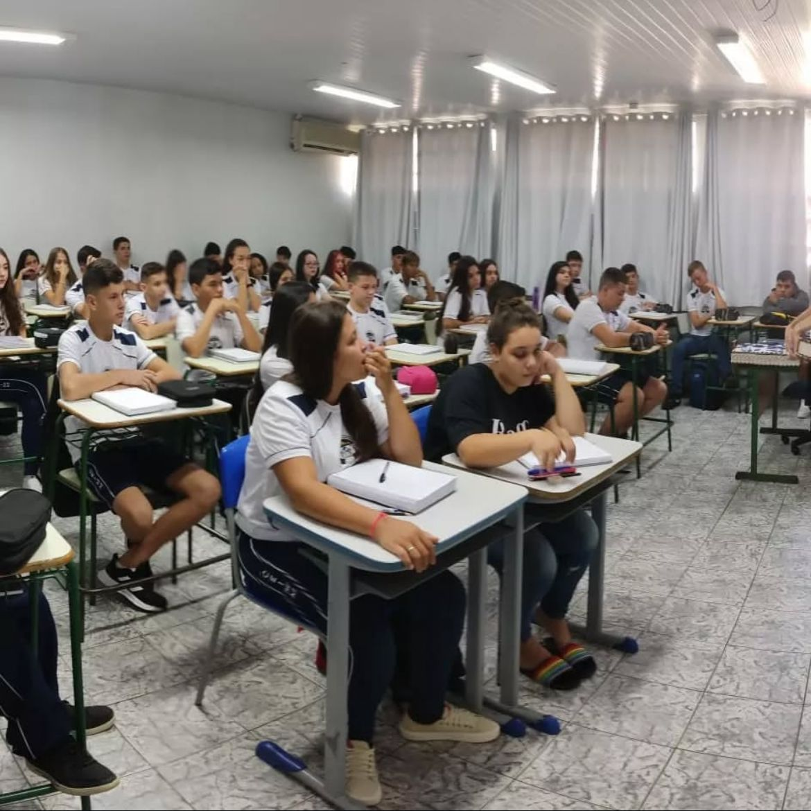
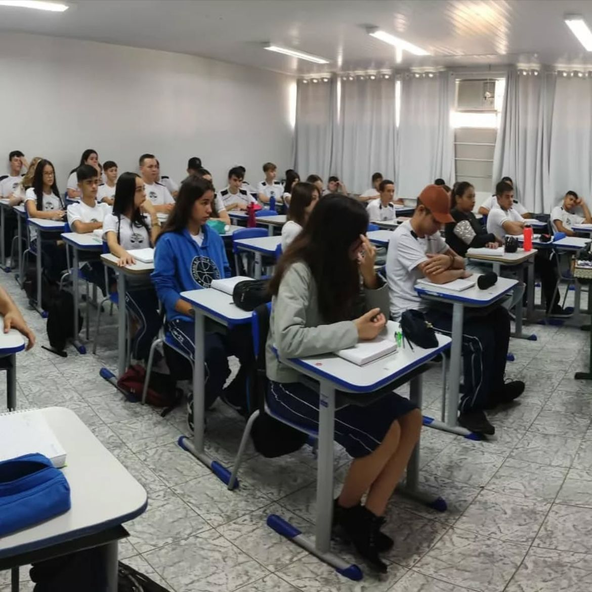

🕊️ Um passarinho nos contou que hoje é o Dia das Diretoras…
Mas antes de celebrarmos esse dia tão especial, temos algo ainda mais
emocionante pra lembrar:
a nossa trajetória até aqui.
⏳ Faltam
para o fim das aulas!
(Encerram em 19 de dezembro de 2025)
💙 Mas não precisam ficar tristes... A gente vai continuar aqui
marcados pela nossa história na instituição, e com certeza vivendo
no coração de vocês por muito tempo! Continuem acompanhando esse
site e descubram o quão especiais vocês são — o quanto vocês são
incríveis e inspiram cada um de nós. 🌟
✨ Uma história que começou separada, mas se uniu para fazer história.
Tudo começou lá no 1º ano, quando ainda éramos
divididos entre o 1ºA e o 1ºB. Cada
turma com seu jeito, suas histórias e muitas expectativas para o que
viria pela frente. Foram tempos de adaptação, aprendizado e amizade,
que marcaram o início da nossa jornada no Ensino Médio.
No 2º ano nos unimos e formamos o
2ºB, uma turma que logo se destacou. Ficamos
conhecidos pelas boas notas, pela dedicação e pela
frequência exemplar. Mostramos que, juntos, éramos capazes de ir além
— tornamo-nos uma verdadeira família escolar.
Agora, no 3º B, encerramos essa linda trajetória.
Enfrentamos desafios, realizamos o SAEB com
comprometimento e nos despedimos dessa fase prontos para seguir rumo à
faculdade. Cada conquista nossa carrega um pedacinho
de tudo o que vivemos aqui.
É com o coração cheio de gratidão que deixamos nosso
agradecimento especial à direção da instituição, à
Liliana e à Rosalba. Obrigada por
acreditarem em nós, por cada palavra de incentivo, por todo carinho,
paciência e dedicação. Vocês foram fundamentais para que chegássemos
até aqui.
Encerramos esta etapa com orgulho e emoção, levando conosco
lembranças, aprendizados e laços que permanecerão para sempre.
📚 Onde tudo começou...

📘 1ºA — O início de muitas amizades e histórias!

📗 1ºB — Onde os sonhos começaram a se desenhar!
💛 2ºB — A união que transformou tudo em amizade, risadas e conquistas!
👵👴 Nosso trote do terceirão — porque o 3ºB vive intensamente, até
quando vira “idoso”! 💙
💛 Nossas líderes, nossa inspiração
Hoje o agradecimento vai para quem esteve sempre presente, acompanhando
cada passo, orientando, acolhendo e acreditando em nós.
🎓 Liliana
Nossa diretora — exemplo de sabedoria, força e cuidado com cada
detalhe do colégio.
🌼 Rosalba
Nossa vice-diretora — sempre com aquele olhar atencioso e aquela
energia que faz tudo acontecer do melhor jeito.
Obrigado por fazerem parte da nossa jornada — e por tornarem o colégio
um lugar de crescimento, aprendizado e memórias que vamos levar pra
sempre. 💙
🎥 Um presente inesquecível: nossas futuras profissões
Um dia antes da realização da nossa Prova do SAEB, no
dia 22/10/2025, recebemos uma surpresa que marcou
nossos corações. 💙 A nossa direção preparou,
com muito carinho, um vídeo com as nossas
futuras profissões — um gesto cheio de amor, emoção e
inspiração.
Teve riso, teve choro, teve orgulho e, acima de tudo, teve o
reconhecimento do quanto a instituição transforma o nosso dia a dia. Esse
vídeo representa o impacto que o CEIMM e nossas
diretoras têm em cada um de nós.
💫 Um vídeo preparado com amor, pela direção — nossa inspiração. Agradecemos por acreditarem tanto em cada um de
nós. 💙
🕊️ O passarinho voltou para dar um último recado...
Se preparem para se emocionar e receber a nossa homenagem, preparada com
todo o amor e carinho pela Turma do 3º Ano B. 💙
E lembrando: como estava escrito na carta, vocês
precisam estar sendo gravadas neste momento, tá? 🎥 A
gente está em prova — realizando mais um passo rumo às nossas
universidades — mas queremos ver a reação de vocês quando receberem essa
surpresa.